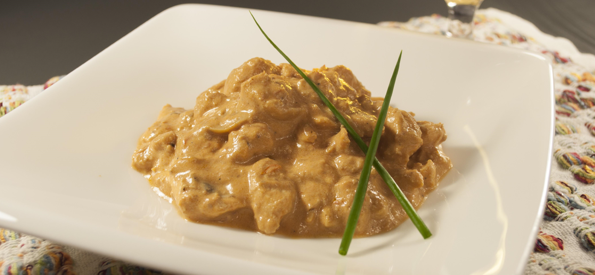

Strognoff de frango

Ingredientes
3 peitos de frango cortados em cubos
1 dente de alho picado
sal e pimenta a gosto
1 cebola picada
2 colheres (sopa) de maionese
1 colher de manteiga
1/2 copo de ketchup
1/3 copo de mostarda
1 copo de cogumelos
1 copo de creme de leite
batata palha a gosto
Modo de preparo
- Em uma panela, misture o frango, o alho, a maionese, o sal e a pimenta.
- Em uma frigideira grande, derreta a manteiga e doure a cebola.
- Junte o frango temperado até que esteja dourado.
- Adicione os cogumelos, o ketchup e a mostarda.
- incorpore o creme de leite e retire do fogo antes de ferver.
- Sirva com arroz branco e batata palha.
Informações adicionais
O strogonoff, apesar de ser uma receita muito famosa entre os brasileiros, nasceu na Rússia e era um prato servido para nobreza russa. No Brasil, se popularizou nos anos 1970 e era uma comida especial, servida em festas. Não demorou muito, o strogonoff chegou nos pratos de todos os brasileiros e hoje faz parte do nosso dia a dia.
Panela ícones criados por Andy Horvath - Flaticon
Receita e texto retirados de TudoGostoso.com.br